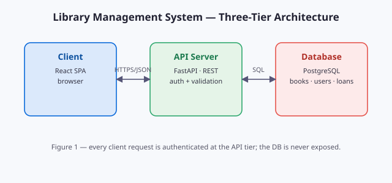

Build a two-tier system that tracks book issues and returns for the college library, replacing the register-based process. The backend exposes a REST API; the frontend is a single-page app.

The client never talks to the database directly; every request passes through the API layer where authentication and validation happen.
| Module | Responsibility | Status |
|---|---|---|
auth | JWT login, role checks (student / librarian) | done |
catalog | Search, filter, add/remove titles | done |
circulation | Issue, return, renew, fines | in progress |
reports | Monthly issue statistics | planned |
This page is a self-contained HTML file rendered inside ReadSpace's sandboxed iframe — scripts are disabled by default (toggle Scripts on in the toolbar to run the line below) and the relative image above is resolved from the same folder, exactly like it would be on disk.